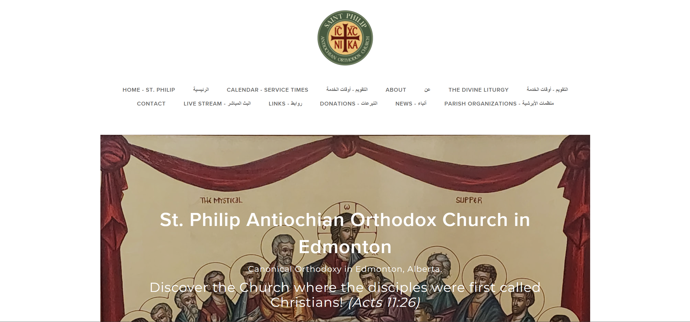
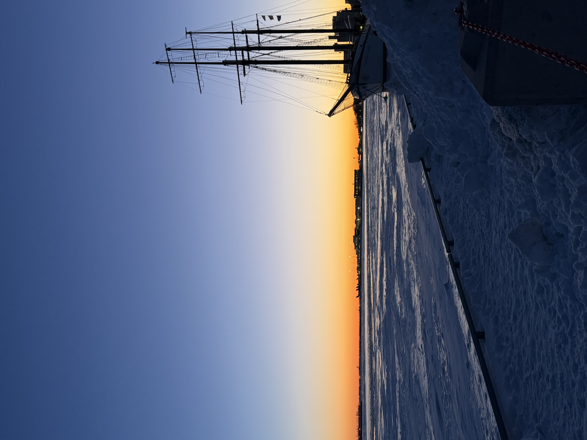
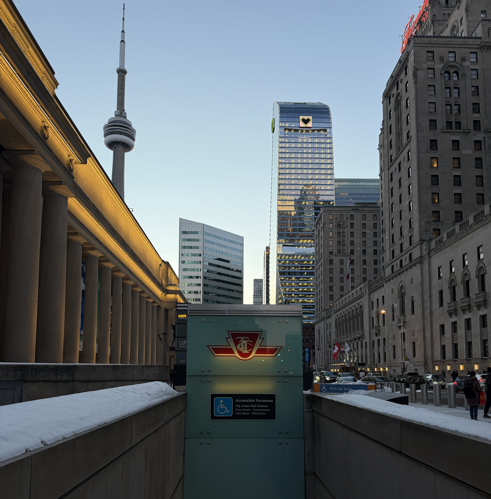
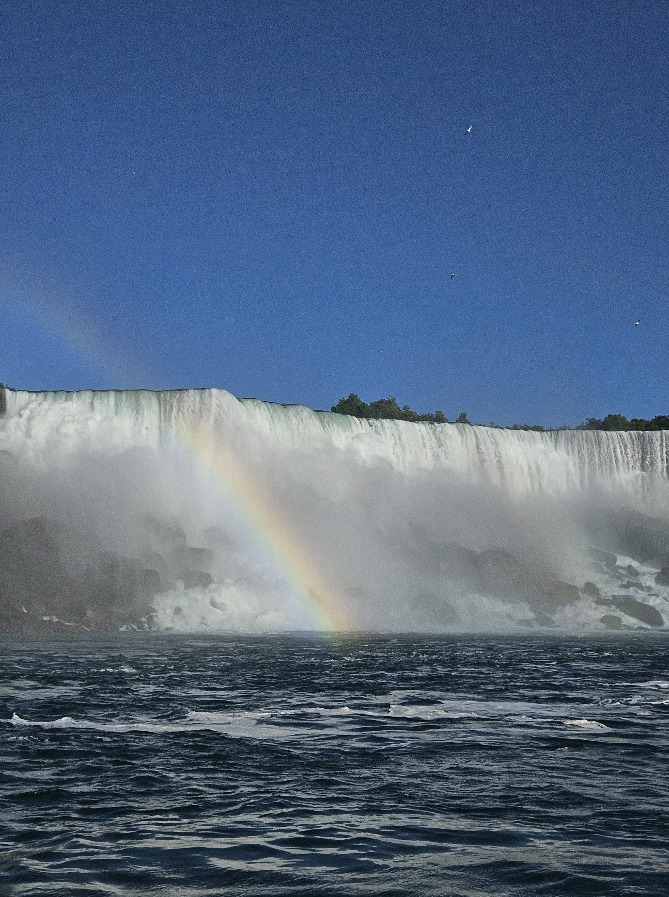

Projects
Design work, client work, and creative exploration.
A selection of projects where I’ve focused on usability, structure, and visual clarity.
Project One
Web Capstone Project — St. Philip Antiochian Orthodox Church
This project was completed as part of my capstone course and involved redesigning the website for a real client, St. Philip Antiochian Orthodox Church in Edmonton. The goal was to improve the site’s usability, modernize its visual design, and create a more structured and accessible experience for users.


My Role
My role in this project focused on both design and implementation. I contributed to creating low-fidelity and high-fidelity wireframes that defined the new structure and visual direction of the website. I also assisted in translating the finalized design into WordPress and applying it to the live site.
Process
The redesign process began with analyzing the existing website to identify usability issues and areas for improvement. From there, I worked on wireframes and design refinements before helping migrate the redesign into WordPress.
Tools Used
- WordPress
- Figma
- Wireframing
- UI/UX Design
- Responsive Design
- Team Collaboration
What I Learned
This project strengthened my ability to design with both user needs and client goals in mind. It also gave me valuable experience working as part of a team and understanding the full process from concept to implementation.
Project Two
Photography Collection
Photography is one of my strongest creative interests and plays a big role in how I approach visual design. Through capturing different environments, lighting conditions, and compositions, I’ve developed a stronger eye for detail, balance, and storytelling.
I’m especially drawn to scenes that combine structure, atmosphere, and contrast, whether it’s architecture, landscapes, or lighting-focused environments. These experiences influence the way I design and help me create work that feels intentional and visually engaging.




